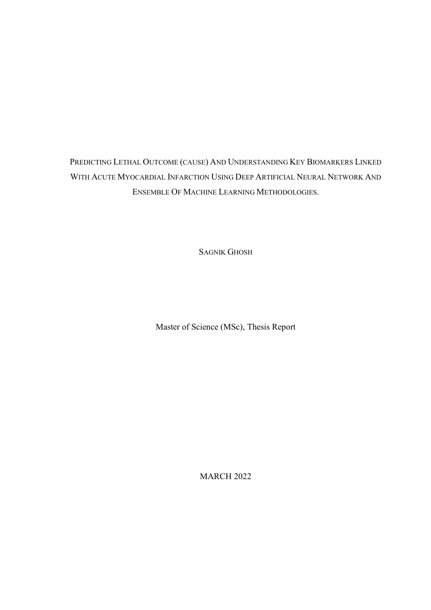
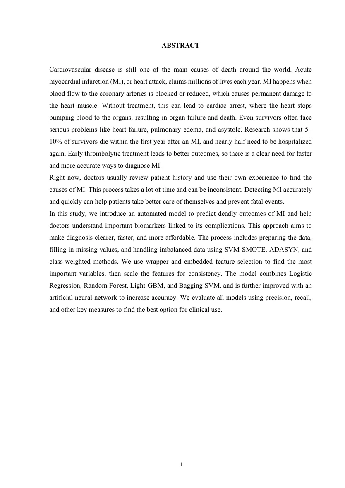

用深度神经网络和集成机器学习预测急性心肌梗死致死风险与关键 biomarkerPredicting Lethal Outcome (Cause) And Understanding Key Biomarkers Linked With Acute Myocardial Infarction Using Deep Artificial Neural Network And Ensemble Of Machine Learning Methodologies
方向不匹配；进入候选主要由 eess.IV/cs.CV 自动筛选触发，不建议投入主线阅读时间。
一句话工作总结
医学 tabular/ensemble 风险预测论文；与 SLAM/GNSS/三维重建基本无关，建议仅作噪声候选记录。
摘要
该文面向急性心肌梗死患者的致死风险预测和关键 biomarker 解释。流程包括缺失值处理、SVMSMOTE/ADASYN/class-weight 处理类别不平衡、wrapper 与 embedded feature selection、特征缩放，以及 Logistic Regression、Random Forest、LightGBM、Bagging SVM 和神经网络组合建模。摘要强调提高诊断速度和可解释性，但未给出与 SLAM/GNSS/三维重建相关的内容，也未在摘要中列出明确可复核的性能结果。
Cardiovascular disease is still one of the main causes of death around the world. Acute myocardial infarction (MI), or heart attack, claims millions of lives each year. MI happens when blood flow to the coronary arteries is blocked or reduced, which causes permanent damage to the heart muscle. Without treatment, this can lead to cardiac arrest, where the heart stops pumping blood to the organs, resulting in organ failure and death. Even survivors often face serious problems like heart failure, pulmonary edema, and asystole. Research shows that 5 to 10 percent of survivors die within the first year after an MI, and nearly half need to be hospitalized again. Early thrombolytic treatment leads to better outcomes, so there is a clear need for faster and more accurate ways to diagnose MI. Right now, doctors usually review patient history and use their own experience to find the causes of MI. This process takes a lot of time and can be inconsistent. Detecting MI accurately and quickly can help patients take better care of themselves and prevent fatal events. In this study, we introduce an automated model to predict deadly outcomes of MI and help doctors understand important biomarkers linked to its complications. This approach aims to make diagnosis clearer, faster, and more affordable. The process includes preparing the data, filling in missing values, and handling imbalanced data using SVMSMOTE, ADASYN, and class-weighted methods. We use wrapper and embedded feature selection to find the most important variables, then scale the features for consistency. The model combines Logistic Regression, Random Forest, Light-GBM, and Bagging SVM, and is further improved with an artificial neural network to increase accuracy. We evaluate all models using precision, recall, and other key measures to find the best option for clinical use.
中文解读摘录
- 为什么看：这是医学机器学习论文，与 SLAM/GNSS/三维重建基本不相关；进入候选主要因为 eess.IV/cs.CV 类别和自动采集评分。保留为低优先级噪声样本，避免误判为方向主线。
- 方法要点：围绕 MI 致死风险预测，处理缺失值与类别不平衡，结合 Logistic Regression、Random Forest、LightGBM、Bagging SVM 和人工神经网络，并做 wrapper/embedded feature selection。
- 结果信号：摘要未给出可复核的具体性能数值；主要强调早诊和 biomarker 解释。
- 跟踪建议：除非需要医学 tabular+ensemble pipeline 示例，否则可跳过；不建议投入 SLAM/GNSS 阅读时间。
- 链接：abs · PDF
图表/页面预览
{kind=link}

{kind=link}
